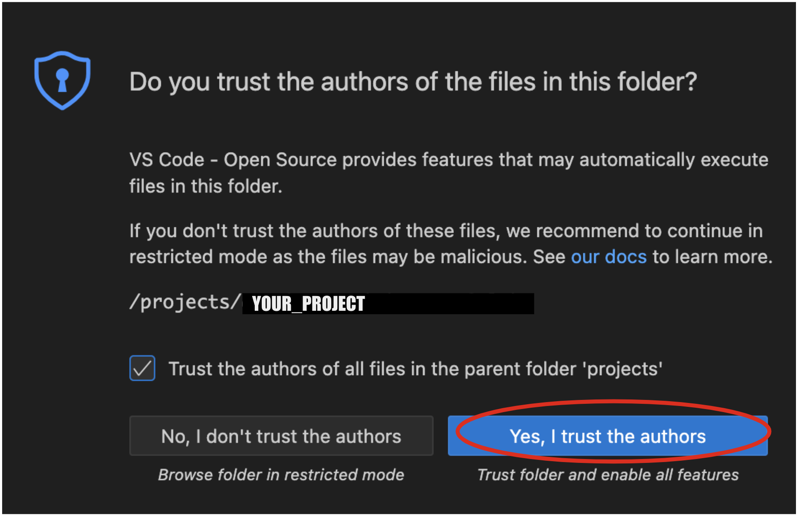
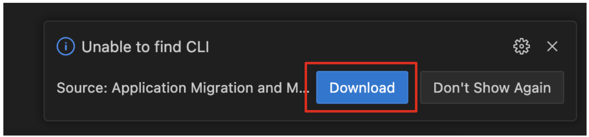

2. Analyze Monolith - 25 minutes
In this module you’ll work with an existing Java EE application designed for a retail webshop. The current version of the webshop is a Java EE application built for Oracle Weblogic Application Server. As part of a modernization strategy you’ve decided to move this application to JBoss EAP, containerize it, and run it on a Kubernetes platform with OpenShift.
What is Migration Toolkit for Applications?
Migration Toolkit for Applications (MTA) is an extensible and customizable rule-based tool that helps simplify migration of Java applications.
It is used by organizations for:
-
Planning and work estimation
-
Identifying migration issues and providing solutions
-
Detailed reporting
-
Built-in rules and migration paths
-
Rule extensibility and customization
-
Ability to analyze source code or application archives
Read more about it in the MTA documentation
2.1. Analyze app using MTA IDE Plugin
In this step we will analyze a monolithic application built for use with Oracle WebLogic Server (WLS). This application is a Java EE application using a number of different technologies, including standard Java EE APIs as well as proprietary Weblogic APIs and best practices.
For this lab, we will use the MTA Visual Studio Code Extension based on Red Hat OpenShift Dev Spaces.
The IDE Plugin for the Migration Toolkit for Applications provides assistance directly in Eclipse and Red Hat OpenShift Dev Spaces for developers making changes for a migration or modernization effort. It analyzes your projects using MTA, marks migration issues in the source code, provides guidance to fix the issues, and offers automatic code replacement when possible.
2.2. Access Your Development Environment
You will be using Visual Studio Code (VS Code) based on Red Hat OpenShift Dev Spaces. Changes to files are auto-saved every few seconds, so you don’t need to explicitly save changes.
To get started, {{ DS_URL }}[access the Red Hat OpenShift Dev Spaces instance^] and select Log in with OpenShift button:

Type in the following credentail:
-
Username:
%USERID% -
Password:
{openshift-password}

|
In case you see the Authorize Access page as below, select Allow selected permissions button. 
|
Once you log in, you’ll be placed on the Create Workspace dashboard. Copy the following Git Repo URL and select Create & Open.
A new window or tab in your web browser will open automatically to showcase the progess about Starting workspace quarkus-workshop. It takes about 60 seconds to finish the process.
|
In case you see this information page, select 
|
After a few seconds, you’ll be placed in the workspace.
|
In case you see this infomation page, check on

|
You’ll use all of these during the course of this workshop, so keep this browser tab open throughout. If things get weird, you can simply reload the browser tab to refresh the view.
2.3. Use the configuration editor to setup the analysis
Click on MTA Explorer icon on the left. Then, a new MTA configuration will be shown up:
|
In case you see this popup, select

|
To input source files and directories, click on Add then select Open File Explorer:
Note that you might need to remove an existing input directory.
Open projects > cloud-native-workshop-v2m1-labs then select monolith directory. Click on Choose…:
Then you will see that /projects/cloud-native-workshop-v2m1-labs/monoilth directory is added in --input configuration.
Be sure that eap7 is already selected in --target server to migrate:
Click on --source to migrate from then select weblogic. Leave the other configurations:
2.4. Run an analysis report
Click on Run icon to analyze the WebLogic application. Note that if you don’t see the Run icon, you need to click on the mtaConfiguration:
Migration Toolkit for Applications (MTA) CLI will be executed automatically in a new terminal then it will take a few mins to complete the analysis. Click on Open Report:
2.5. Review the report
The main landing page of the report lists the applications that were processed. Each row contains a high-level overview of the story points, number of incidents, and technologies encountered in that application.
Click on the monolith link to access details for the project:
2.6. Understanding the report
The Dashboard gives an overview of the entire application migration effort. It summarizes:
-
The incidents and story points by category
-
The incidents and story points by level of effort of the suggested changes
-
The incidents by package
|
Story points are an abstract metric commonly used in Agile software development to estimate the relative level of effort needed to implement a feature or change. Migration Toolkit for Application uses story points to express the level of effort needed to migrate particular application constructs, and the application as a whole. The level of effort will vary greatly depending on the size and complexity of the application(s) to migrate. |
You can use this report to estimate how easy/hard each app is, and make decisions about which apps to migrate, which to refactor, and which to leave alone. In this case we will do a straight migration to JBoss EAP.
On to the next step to change the code!